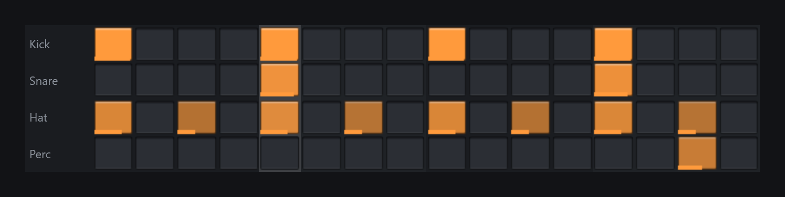

Recipes
Complete, copy-ready examples that combine several controls with a real MIDI or audio library.
#A mixer from a view-model
A mixer whose channels come from a collection of track view-models, with meters fed from the audio engine.

public sealed class TrackViewModel : ObservableObject
{
private double _volume, _pan;
private bool _muted, _soloed, _armed;
public TrackViewModel(string name, Color color) { Name = name; Color = new SolidColorBrush(color); }
public string Name { get; }
public Brush Color { get; }
public double Volume { get => _volume; set => Set(ref _volume, value); } // dB
public double Pan { get => _pan; set => Set(ref _pan, value); } // -1..1
public bool IsMuted { get => _muted; set => Set(ref _muted, value); }
public bool IsSoloed { get => _soloed; set => Set(ref _soloed, value); }
public bool IsArmed { get => _armed; set => Set(ref _armed, value); }
}
public sealed class MixerViewModel
{
public ObservableCollection<TrackViewModel> Tracks { get; } = new()
{
new("Kick", Color.FromRgb(0xFF, 0x6B, 0x5A)),
new("Snare", Color.FromRgb(0xFF, 0xC8, 0x4A)),
new("Bass", Color.FromRgb(0x6F, 0xA8, 0xFF)),
new("Keys", Color.FromRgb(0x4C, 0xD6, 0x9A)),
};
}<ItemsControl x:Name="mixer" ItemsSource="{Binding Tracks}">
<ItemsControl.ItemsPanel>
<ItemsPanelTemplate><StackPanel Orientation="Horizontal"/></ItemsPanelTemplate>
</ItemsControl.ItemsPanel>
<ItemsControl.ItemTemplate>
<DataTemplate>
<daw:ChannelStrip TrackName="{Binding Name}" TrackColor="{Binding Color}" Margin="0,0,4,0"
Volume="{Binding Volume, Mode=TwoWay}" Pan="{Binding Pan, Mode=TwoWay}"
IsMuted="{Binding IsMuted, Mode=TwoWay}" IsSoloed="{Binding IsSoloed, Mode=TwoWay}"
IsArmed="{Binding IsArmed, Mode=TwoWay}" Loaded="OnStripLoaded"/>
</DataTemplate>
</ItemsControl.ItemTemplate>
</ItemsControl>The engine needs the strips to push levels. Collect them as they load, and let the engine call PushLevels from its audio thread:
private readonly ConcurrentDictionary<TrackViewModel, ChannelStrip> _strips = new();
private void OnStripLoaded(object sender, RoutedEventArgs e)
{
var strip = (ChannelStrip)sender;
_strips[(TrackViewModel)strip.DataContext] = strip;
}
// Audio thread, once per block and track:
void OnTrackLevels(TrackViewModel track, float pl, float rl, float pr, float rr)
{
if (_strips.TryGetValue(track, out var strip)) strip.PushLevels(pl, rl, pr, rr);
}#Playing MIDI with DryWetMidi
A keyboard with wheels and pedals that plays a MIDI output, and lights up from a MIDI input. This uses DryWetMidi (dotnet add package Melanchall.DryWetMidi); the MIDI player sample works the same way.

<DockPanel>
<StackPanel DockPanel.Dock="Left" Orientation="Horizontal" Margin="0,0,6,0">
<daw:PerformanceWheel x:Name="pitch" Mode="PitchBend" Height="110"/>
<daw:PerformanceWheel x:Name="mod" Mode="Modulation" Height="110" Margin="4,0,0,0"/>
</StackPanel>
<daw:PianoPedals x:Name="pedals" DockPanel.Dock="Bottom" HorizontalAlignment="Right" Margin="0,4,0,0"/>
<daw:PianoKeyboard x:Name="keys" Height="110" LowestNote="36" HighestNote="96"/>
</DockPanel>using Melanchall.DryWetMidi.Common;
using Melanchall.DryWetMidi.Core;
using Melanchall.DryWetMidi.Multimedia;
public partial class KeyboardView : UserControl
{
private readonly OutputDevice _out = OutputDevice.GetByName("Microsoft GS Wavetable Synth");
private InputDevice? _in;
public KeyboardView()
{
InitializeComponent();
keys.NoteOn += (s, e) => _out.SendEvent(new NoteOnEvent((SevenBitNumber)e.Note, (SevenBitNumber)e.Velocity));
keys.NoteOff += (s, e) => _out.SendEvent(new NoteOffEvent((SevenBitNumber)e.Note, (SevenBitNumber)0));
pitch.ValueChanged += (s, e) => _out.SendEvent(new PitchBendEvent((ushort)(e.NewValue + 8192)));
mod.ValueChanged += (s, e) => _out.SendEvent(new ControlChangeEvent((SevenBitNumber)1, (SevenBitNumber)e.NewValue));
pedals.PedalChanged += (s, e) =>
{
if (e.IsUserChange)
_out.SendEvent(new ControlChangeEvent((SevenBitNumber)e.Controller, (SevenBitNumber)e.Value));
};
Unloaded += (s, e) => { _in?.Dispose(); _out.Dispose(); };
}
public void ListenTo(string inputName)
{
_in = InputDevice.GetByName(inputName);
_in.EventReceived += OnMidiIn; // driver thread
_in.StartEventsListening();
}
private void OnMidiIn(object? sender, MidiEventReceivedEventArgs e)
{
_out.SendEvent(e.Event); // MIDI thru
Dispatcher.BeginInvoke(() =>
{
switch (e.Event)
{
case NoteOnEvent on when on.Velocity > 0: keys.SetHighlighted(on.NoteNumber, on.Velocity); break;
case NoteOnEvent on: keys.SetHighlighted(on.NoteNumber, false); break;
case NoteOffEvent off: keys.SetHighlighted(off.NoteNumber, false); break;
case ControlChangeEvent cc: pedals.ApplyControlChange(cc.ControlNumber, cc.ControlValue); break;
}
});
}
}#Metering audio with NAudio
Meters for what your PC is playing, with NAudio's loopback capture (dotnet add package NAudio). The capture callback runs on a background thread and pushes straight into the strip.
using NAudio.Wave;
var capture = new WasapiLoopbackCapture(); // 32-bit float, usually stereo
int channels = capture.WaveFormat.Channels;
capture.DataAvailable += (s, e) =>
{
var buffer = new WaveBuffer(e.Buffer);
int frames = e.BytesRecorded / 4 / channels;
float pl = 0, pr = 0, sl = 0, sr = 0;
for (int i = 0; i < frames; i++)
{
float l = Math.Abs(buffer.FloatBuffer[i * channels]);
float r = Math.Abs(buffer.FloatBuffer[i * channels + (channels > 1 ? 1 : 0)]);
pl = Math.Max(pl, l); pr = Math.Max(pr, r);
sl += l * l; sr += r * r;
}
if (frames > 0) master.PushLevels(pl, MathF.Sqrt(sl / frames), pr, MathF.Sqrt(sr / frames));
};
capture.StartRecording();
Closed += (s, e) => { capture.StopRecording(); capture.Dispose(); };<daw:ChannelStrip x:Name="master" TrackName="Output" ShowArmButton="False"/>#Piano roll, lane and transport in sync
A small sequencer screen: a transport, a piano roll with a velocity lane, and a keyboard that lights the notes under the playhead. One clock drives everything, read once per frame.

<DockPanel>
<daw:TransportBar x:Name="transport" DockPanel.Dock="Top" Tempo="120" IsLooping="True"/>
<daw:PianoKeyboard x:Name="keys" DockPanel.Dock="Bottom" Height="80" LowestNote="36" HighestNote="96"/>
<Grid>
<Grid.RowDefinitions>
<RowDefinition Height="*"/>
<RowDefinition Height="90"/>
</Grid.RowDefinitions>
<ScrollViewer CanContentScroll="True" HorizontalScrollBarVisibility="Auto" VerticalScrollBarVisibility="Auto">
<daw:PianoRoll x:Name="roll" LengthInBeats="16" Snap="0.25" FollowPlayhead="True"/>
</ScrollViewer>
<daw:ControllerLane Grid.Row="1" Roll="{Binding ElementName=roll}" Mode="Velocity"/>
</Grid>
</DockPanel>private readonly ObservableCollection<MidiNote> _notes = new();
private readonly Stopwatch _clock = new();
private double _startBeat;
private readonly HashSet<int> _lit = new();
public SequencerView()
{
InitializeComponent();
foreach (var (p, s) in new[] { (60, 0.0), (64, 1.0), (67, 2.0), (72, 3.0) }) _notes.Add(new MidiNote(p, s, 1, 100));
roll.Notes = _notes;
transport.PlayCommand = new RelayCommand<bool>(play =>
{
if (play) { _startBeat = transport.Position; _clock.Restart(); } else _clock.Stop();
});
CompositionTarget.Rendering += OnFrame;
}
private void OnFrame(object? sender, EventArgs e)
{
if (!transport.IsPlaying) return;
double beat = _startBeat + _clock.Elapsed.TotalMinutes * transport.Tempo;
if (transport.IsLooping) beat %= roll.LengthInBeats;
transport.Position = beat;
roll.PlayheadPosition = beat;
var now = _notes.Where(n => beat >= n.Start && beat < n.Start + n.Length).Select(n => n.Pitch).ToHashSet();
foreach (int p in _lit.Except(now)) keys.SetHighlighted(p, false);
foreach (var n in _notes.Where(n => now.Contains(n.Pitch) && !_lit.Contains(n.Pitch))) keys.SetHighlighted(n.Pitch, n.Velocity);
_lit.Clear(); _lit.UnionWith(now);
}#A step sequencer engine
A drum machine: the pattern is edited on the UI thread, a background thread plays it with sixteenth-note timing, and the playhead is shown with CurrentStep.

public sealed class DrumEngine : IDisposable
{
private static readonly int[] Notes = { 36, 38, 42, 39 }; // kick, snare, closed hat, clap (GM drums)
private readonly StepPattern _pattern;
private readonly Action<int, int, int> _noteOn; // (channel, note, velocity)
private readonly Thread _thread;
private volatile bool _running = true;
public volatile int Step = -1;
public double Tempo = 120;
public DrumEngine(StepPattern pattern, Action<int, int, int> noteOn)
{
_pattern = pattern; _noteOn = noteOn;
_thread = new Thread(Run) { IsBackground = true, Priority = ThreadPriority.AboveNormal };
_thread.Start();
}
private void Run()
{
var clock = Stopwatch.StartNew();
long next = 0; int step = 0;
while (_running)
{
long now = clock.ElapsedTicks;
if (now < next) { Thread.Sleep(1); continue; }
for (int row = 0; row < _pattern.Rows; row++)
{
int v = _pattern.GetVelocity(row, step);
if (v > 0) _noteOn(9, Notes[row], v);
}
Step = step;
step = (step + 1) % _pattern.Steps;
next += (long)(Stopwatch.Frequency * 60.0 / Tempo / 4); // one sixteenth
}
}
public void Dispose() { _running = false; _thread.Join(); }
}var pattern = new StepPattern(rows: 4, steps: 16);
steps.Pattern = pattern;
steps.RowLabels = new[] { "Kick", "Snare", "Hat", "Clap" };
var engine = new DrumEngine(pattern, (ch, note, vel) => midiOut.NoteOn(ch, note, vel));
CompositionTarget.Rendering += (s, e) => steps.CurrentStep = engine.Step;#A synth panel
Panels, knobs, an XY pad and an envelope, all bound to one view-model.
<StackPanel Orientation="Horizontal">
<daw:DawPanel Header="OSCILLATOR" Width="220" CanHide="False">
<WrapPanel Margin="8">
<daw:Knob Label="Wave" Minimum="0" Maximum="3" Step="1" Value="{Binding Wave}"/>
<daw:Knob Label="Detune" Minimum="-50" Maximum="50" IsBipolar="True" Value="{Binding Detune}"
ValueStringFormat="{}{0:+0;-0;0} ct"/>
<daw:Knob Label="Level" Value="{Binding Level}" ValueFormatter="{x:Static daw:ValueFormatters.Percent}"/>
</WrapPanel>
</daw:DawPanel>
<daw:DawPanel Header="FILTER" Margin="8,0" CanHide="False">
<daw:XYPad Width="200" Height="150" Margin="8" XLabel="cutoff" YLabel="resonance"
XValue="{Binding CutoffNorm, Mode=TwoWay}" YValue="{Binding Resonance, Mode=TwoWay}"/>
</daw:DawPanel>
<daw:DawPanel Header="AMP ENVELOPE" CanHide="False">
<daw:EnvelopeEditor Width="280" Height="150" Margin="8"
Attack="{Binding Attack, Mode=TwoWay}" Decay="{Binding Decay, Mode=TwoWay}"
Sustain="{Binding Sustain, Mode=TwoWay}" Release="{Binding Release, Mode=TwoWay}"/>
</daw:DawPanel>
</StackPanel>